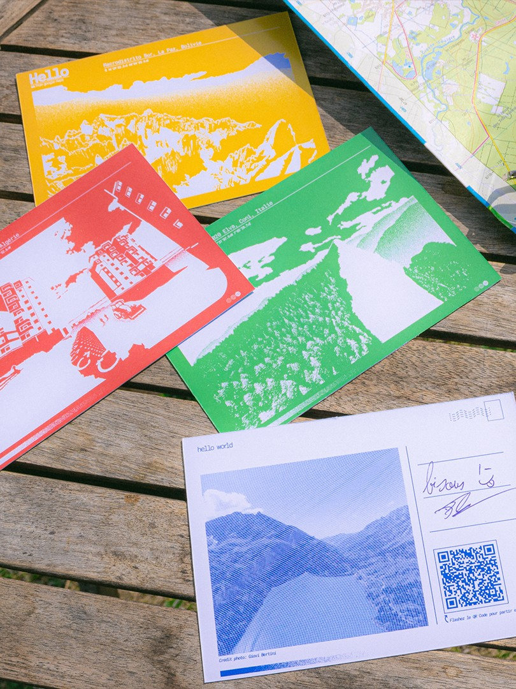

Chaos et monotonie dans le web design
Projet de fin d’étude bac +3, il se concentre sur l’utilisation et la sensibilisation d’une cible jeune à la data et à des enjeux de plus en plus prenant dans nos sociétés numérique. Je me suis greffé non officiellement à la campagne d’UFC Que Choisir “Je ne suis pas une data”, du constat que cette dernière ne ciblait pas suffisamment les jeunes, futur usager majoritaire des outils numériques et acteurs de la société de demain. Ce projet fut l’occasion de me documenter sur la data et ses enjeux comme phénomène sociétal, il m’a aussi permis de mieux appréhender les enjeux d’un projet design.
